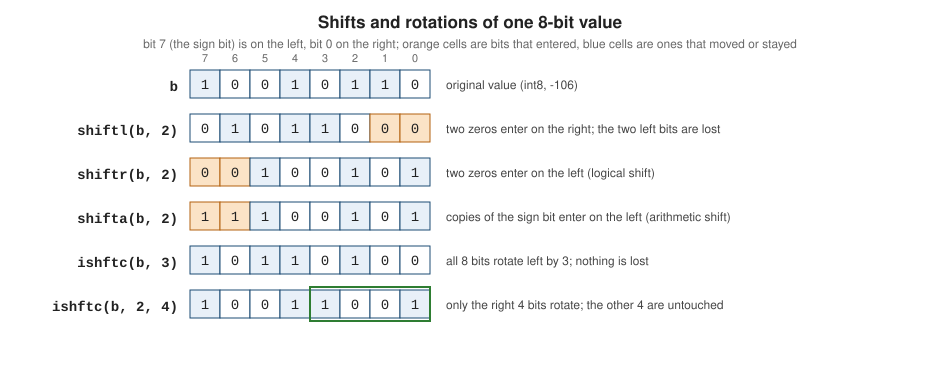

Numeric Model, Bit Manipulation and Conversion
|
This content was generated with the assistance of AI and should be verified against the official documentation before being relied on in production. |
This page is written against Fortran 2023 (ISO/IEC 1539-1:2023, J3/23-007r1) and was checked on 2026-10-19. Every example
was compiled with gfortran -std=f2023 -Wall -Wextra -pedantic -fimplicit-none -fcheck=all (GNU Fortran 16.2) and run,
and where the feature is portable the examples were also built and run with LLVM Flang 23; the output shown is real
output, and unless the text says otherwise the two compilers printed exactly the same. Both ran on an aarch64 Linux
container, which matters in the few places where the standard leaves the result to the processor. The rules are in
three places in the standard: the models are 16.3 (bits) and 16.4 (numbers), the intrinsic functions are specified
alphabetically in 16.9, and c_sizeof is in 18.2.3.8. Every function is named with its clause number the first time it
is used.
Fortran describes numbers and bits with models instead of with a machine format. An integer is a signed sum of digits
in some radix, a real is a sign, an exponent and a fixed number of digits, and a bit sequence is the model integer read
as a sequence of 0 and 1 digits. The inquiry functions (huge, epsilon, bit_size, …) report the parameters of the
model that the processor chose for a kind, the manipulation functions (exponent, scale, shiftl, …) are defined
in terms of it, and nothing in the standard says that a real must be IEEE 754 or that a negative integer must be two’s
complement. That is why a program written against the model runs unchanged on every conforming compiler, and why
the questions "what does this bit pattern mean" and "what does this overflow do" often have answers that are only
true for the compilers used here. This page marks those places. The first tour of the model inquiries is on
Intrinsic Types and Kinds; this page goes deeper:
the formulas behind the inquiry results, the functions that take a real apart and put it together, the exact rules of
every conversion, transfer, and all of the bit procedures. IEEE behaviour (NaN, signed zero, rounding modes,
exceptions) is on
Floating-Point and IEEE Arithmetic, and the
other intrinsics are in
Intrinsic Procedures Overview. The running example is
heatflow, the 2D heat diffusion project: the examples store temperatures as tenths of a degree in 16 bits, keep per-cell
flags in one byte, and take its real64 temperatures apart.
The integer and real models
The model set for an integer i is (16.4)
with a radix r greater than one, a count q of digits, digits w_k between 0 and r - 1, and a sign s of plus or
minus one. The set is symmetric. The model for a real x is zero or
with a radix b, a number of digits p, digits f_k between 0 and b - 1 and the first digit f_1 nonzero, a sign s
and an exponent e between e_min and e_max. The leading digit is nonzero, so the significand
0.f1 f2 ... fp always lies in the half-open interval from 1/b up to but not including 1. That one convention explains
the values of exponent and fraction later on: exponent(1.0) is 1, not 0, and fraction(1.0) is 0.5. The
standard also defines an extended model, the same but with no limits on e; exponent, fraction and set_exponent use
it, so they are defined for subnormal numbers too. Radix, digits and exponent range are
chosen by the processor for each kind (16.4); the examples here run on IEEE binary kinds, so b = 2, p is 24, 53 or 113
and the exponent range is 8, 11 or 15 bits wide.
The inquiry functions are defined by formulas in the model, which is why they can be used in constant expressions and why one can be computed from another:
| Function | Result (model parameters) | Value for real64 |
Clause |
|---|---|---|---|
|
|
2 |
16.9.166 |
|
|
53 for |
16.9.71 |
|
|
2.22E-16 |
16.9.78 |
|
|
1.80E+308; 2147483647 for |
16.9.96 |
|
|
2.23E-308 |
16.9.209 |
|
|
1024, -1021 |
16.9.136, 16.9.142 |
|
|
15 |
16.9.162 |
|
|
307; 9 for |
16.9.170 |
|
|
64 for |
16.9.47 |
|
bits an element of the type occupies in memory, padding included |
64 |
16.9.200 |
epsilon is therefore not "the smallest number that can be added to 1": it is the gap above 1, and the gap
below 1 is half as large because 1 sits at the bottom of its binade, as the real-manipulation section shows. huge
and tiny are not symmetric either: -huge(x) is the most negative finite real, and there is no integer -huge(x) - 1
in the model even though two’s complement hardware has one. The next program prints the integer model for the four
standard kinds and checks the formulas.
program integer_model
use, intrinsic :: iso_fortran_env, only: int8, int16, int32, int64
implicit none
integer(int8) :: a
integer(int16) :: b
integer(int32) :: c
integer(int64) :: d
print '(a)', 'kind radix digits range bit_size storage_size huge'
print '(a, 5(1x, i6), 1x, i0)', 'int8 ', radix(a), digits(a), range(a), bit_size(a), storage_size(a), huge(a)
print '(a, 5(1x, i6), 1x, i0)', 'int16', radix(b), digits(b), range(b), bit_size(b), storage_size(b), huge(b)
print '(a, 5(1x, i6), 1x, i0)', 'int32', radix(c), digits(c), range(c), bit_size(c), storage_size(c), huge(c)
print '(a, 5(1x, i6), 1x, i0)', 'int64', radix(d), digits(d), range(d), bit_size(d), storage_size(d), huge(d)
! huge = radix**digits - 1; written as 2*(2**(digits-1) - 1) + 1 so that no intermediate overflows
print '(a, l1)', 'huge(c) == 2*(2**(digits(c)-1) - 1) + 1 : ', huge(c) == 2 * (2_int32**(digits(c) - 1) - 1) + 1
print '(a, l1)', 'huge(d) == 2*(2**(digits(d)-1) - 1) + 1 : ', huge(d) == 2 * (2_int64**(digits(d) - 1) - 1) + 1
print '(a, i0)', 'int(log10(real(huge(d), 8))) : ', int(log10(real(huge(d), 8)))
c = -huge(c)
print '(a, i0)', '-huge(c) : ', c
c = c - 1 ! the extra two's complement value, outside the model
print '(a, i0)', 'one below -huge(c) : ', c
print '(a, i0)', 'abs of that value : ', abs(c) ! overflows: still negative
end program integer_modelOutput (gfortran 16.2, strict flags; LLVM Flang 23 prints the same):
kind radix digits range bit_size storage_size huge
int8 2 7 2 8 8 127
int16 2 15 4 16 16 32767
int32 2 31 9 32 32 2147483647
int64 2 63 18 64 64 9223372036854775807
huge(c) == 2*(2**(digits(c)-1) - 1) + 1 : T
huge(d) == 2*(2**(digits(d)-1) - 1) + 1 : T
int(log10(real(huge(d), 8))) : 18
-huge(c) : -2147483647
one below -huge(c) : -2147483648
abs of that value : -2147483648huge(c) is written as 2*(2**(digits(c)-1) - 1) + 1 because 2**digits(c) itself overflows: a constant expression
that overflows is a compile-time error, Result of exponentiation at (1) exceeds the range of INTEGER(4) in gfortran, and
a warning in Flang. The last two lines show the usual hazard of the extra two’s complement value: -huge(c) - 1
is representable by the machine and outside the model, and abs of it is itself, negative. The standard gives no
meaning to that value; it is also why abs, -x and x / -1 overflow only for the one number, and why code that
needs a sentinel should use -huge(c).
For reals the four numbers that matter are 53 digits (digits), the gap epsilon, the smallest normal tiny and
the largest huge. The figure shows where they come from for the three IEEE binary real kinds; the
Intrinsic Types and Kinds page prints them.

Taking a real apart: exponent, fraction, spacing and friends
Seven elemental functions work on the model of their argument. All of them return the same real kind as the argument,
except exponent, which returns a default integer. With x = s * b^e * f in the extended model, where f is the
significand in [1/b, 1):
| Function | Result | Clause |
|---|---|---|
|
|
16.9.85 |
|
|
16.9.90 |
|
|
16.9.178 |
|
|
16.9.184 |
|
the gap between the model numbers around |
16.9.195 |
|
reciprocal of the relative spacing, |
16.9.176 |
|
the machine number next to |
16.9.149 |
These are the portable replacements for bit tricks. x == scale(fraction(x), exponent(x)) for every finite x, and
scale(x, n) multiplies by a power of the radix without touching the significand, so the result is exact whenever it
is representable. spacing is the correct unit of "one step" at x; epsilon(x) is only the answer at 1. And nearest
is the right way to step through the representable numbers: it works on machine numbers, not model numbers, so it also
sees numbers between model values on processors that have them.
program real_manipulation
use, intrinsic :: iso_fortran_env, only: real64
implicit none
integer, parameter :: dp = real64
real(dp), parameter :: samples(*) = [6.5_dp, 0.1_dp, -3.0_dp, 1.0_dp, 0.0_dp]
real(dp) :: x
integer :: i
print '(a)', ' x exponent fraction integer power scale(f,e) spacing rrspacing'
do i = 1, size(samples)
x = samples(i)
print '(f8.2, i9, f11.6, f12.6, f13.9, es14.5e3, es16.5e3)', x, exponent(x), fraction(x), &
fraction(x) * radix(x)**exponent(x), scale(fraction(x), exponent(x)), spacing(x), rrspacing(x)
end do
x = 1.0_dp
print '(a, es24.16)', 'nearest(1, +1) - 1 = ', nearest(x, 1.0_dp) - x
print '(a, es24.16)', '1 - nearest(1, -1) = ', x - nearest(x, -1.0_dp)
print '(a, es24.16)', 'epsilon(1.0_dp) = ', epsilon(x)
print '(a, l1)', 'nearest(1,+1) > 1 : ', nearest(x, 1.0_dp) > x
print '(a, es24.16e3)', 'nearest(0, +1) = ', nearest(0.0_dp, 1.0_dp)
print '(a, es24.16e3)', 'tiny(1.0_dp) = ', tiny(x)
print '(a, f8.3)', 'scale(3.0, 4) = ', scale(3.0_dp, 4)
print '(a, f8.3)', 'scale(3.0, -1) = ', scale(3.0_dp, -1)
print '(a, f8.3)', 'set_exponent(3.0, 1) = ', set_exponent(3.0_dp, 1)
print '(a, f8.3)', 'set_exponent(3.0, 5) = ', set_exponent(3.0_dp, 5)
print '(a, f8.3)', 'fraction(3.0) = ', fraction(3.0_dp)
print '(a, i0)', 'exponent(3.0) = ', exponent(3.0_dp)
end program real_manipulationOutput (gfortran 16.2, strict flags; LLVM Flang 23 prints the same):
x exponent fraction integer power scale(f,e) spacing rrspacing
6.50 3 0.812500 6.500000 6.500000000 8.88178E-016 7.31835E+015
0.10 -3 0.800000 0.000000 0.100000000 1.38778E-017 7.20576E+015
-3.00 2 -0.750000 -3.000000 -3.000000000 4.44089E-016 6.75540E+015
1.00 1 0.500000 1.000000 1.000000000 2.22045E-016 4.50360E+015
0.00 0 0.000000 0.000000 0.000000000 2.22507E-308 0.00000E+000
nearest(1, +1) - 1 = 2.2204460492503131E-16
1 - nearest(1, -1) = 1.1102230246251565E-16
epsilon(1.0_dp) = 2.2204460492503131E-16
nearest(1,+1) > 1 : T
nearest(0, +1) = 4.9406564584124654E-324
tiny(1.0_dp) = 2.2250738585072014E-308
scale(3.0, 4) = 48.000
scale(3.0, -1) = 1.500
set_exponent(3.0, 1) = 1.500
set_exponent(3.0, 5) = 24.000
fraction(3.0) = 0.750
exponent(3.0) = 2The table shows the shape of the model. 6.5 is 0.8125 * 2^3, so exponent is 3 and fraction is 0.8125. The column
"integer power" is the pitfall in the first line of the multiplication: radix(x) is an integer, and the integer
power 2**(-3) is 0, so for 0.1 the product comes out as 0.000000 while scale(fraction(x), exponent(x)) gives
back 0.100000000. Always rebuild a real with scale, or write real(radix(x), dp)**exponent(x). spacing(6.5) is
2^(3-53), which is 8.88E-16, four times epsilon; spacing(1.0) equals epsilon; and 1 - nearest(1, -1) is half of
nearest(1, +1) - 1, because the numbers just below a power of two are twice as close together. spacing(0.0) is
tiny, not zero, and rrspacing(0.0) is zero. The two formats of the table are not an accident: es14.5e3 is used
for the spacing because a three-digit exponent does not fit the default es14.5 without losing its E, a difference
that was printed as 2.22507-308 in a first run. The edit descriptors are on
Format Specifications and Edit Descriptors.
Zero, subnormals, infinities and NaN
The standard defines these functions for the extended model, so they accept subnormal numbers, zero and the IEEE special values, with specific answers:
program special_values
use, intrinsic :: iso_fortran_env, only: real64
use, intrinsic :: ieee_arithmetic, only: ieee_value, ieee_positive_inf, ieee_quiet_nan, ieee_is_nan
implicit none
integer, parameter :: dp = real64
real(dp) :: sub, inf, nan, big
sub = tiny(1.0_dp) / 2**10 ! a subnormal number
big = huge(1.0_dp)
inf = ieee_value(1.0_dp, ieee_positive_inf)
nan = ieee_value(1.0_dp, ieee_quiet_nan)
print '(a, es12.4e3)', 'subnormal value : ', sub
print '(a, i0, a, i0)', 'exponent(sub) : ', exponent(sub), ' minexponent = ', minexponent(sub)
print '(a, f4.2)', 'fraction(sub) : ', fraction(sub)
print '(a, es12.4e3)', 'spacing(sub) : ', spacing(sub)
print '(a, es12.4e3)', 'spacing(0.0) = tiny : ', spacing(0.0_dp)
print '(a, es12.4e3)', 'rrspacing(sub) : ', rrspacing(sub)
print '(a, i0, a, i0)', 'exponent(huge) : ', exponent(big), ' maxexponent = ', maxexponent(big)
print '(a, i0)', 'exponent(+Inf) : ', exponent(inf)
print '(a, i0)', 'exponent(NaN) : ', exponent(nan)
print '(a, i0)', 'huge(0) : ', huge(0)
print '(a, f3.1)', 'fraction(0.0) : ', fraction(0.0_dp)
print '(a, f3.1)', 'set_exponent(0.0, 9) : ', set_exponent(0.0_dp, 9)
print '(a, l1)', 'set_exponent(Inf, 1) is NaN: ', ieee_is_nan(set_exponent(inf, 1))
end program special_valuesOutput (gfortran 16.2, strict flags; LLVM Flang 23 prints the same):
subnormal value : 2.1729E-311
exponent(sub) : -1031 minexponent = -1021
fraction(sub) : 0.50
spacing(sub) : 2.2251E-308
spacing(0.0) = tiny : 2.2251E-308
rrspacing(sub) : 4.5036E+015
exponent(huge) : 1024 maxexponent = 1024
exponent(+Inf) : 2147483647
exponent(NaN) : 2147483647
huge(0) : 2147483647
fraction(0.0) : 0.0
set_exponent(0.0, 9) : 0.0
set_exponent(Inf, 1) is NaN: TSource: J3/23-007r1: 16.9.85 EXPONENT, 16.9.176 RRSPACING, 16.9.184 SET_EXPONENT, 16.9.195 SPACING. See GNU Fortran manual: EXPONENT
A subnormal number such as 2.17E-311 has an exponent of -1031, below minexponent (-1021): the exponent is that of
the extended model, which has no lower limit, and the significand is still in [0.5, 1). spacing of a subnormal is
tiny(x), because the model’s spacing would not be representable. exponent of an infinity or NaN is huge(0), fraction
and set_exponent of an infinity are NaN, and exponent, fraction and set_exponent of 0 are 0. Everything else
about those values (the flags that a conversion can raise, how to create them, ieee_class) is on the IEEE page.
Converting between types
Fortran converts numerically in three ways: automatically in mixed-mode arithmetic and in intrinsic assignment (10.1.5.2,
10.2.1.3; Table 10.9), explicitly with the conversion functions, and by reinterpreting storage with transfer. The
explicit functions are:
| Function | What it does | Result kind without kind= |
Clause |
|---|---|---|---|
|
truncation toward zero; for a complex |
default integer |
16.9.110 |
|
nearest integer; halves round away from zero ( |
default integer |
16.9.152 |
|
largest integer not above |
default integer |
16.9.89, 16.9.51 |
|
as |
kind of |
16.9.11, 16.9.14 |
|
a processor-dependent approximation (usually the nearest) of |
default real, except for complex |
16.9.172 |
|
|
double precision |
16.9.70 |
|
a complex number; |
default complex |
16.9.53 |
|
a logical of another kind; the value is unchanged |
default logical |
16.9.131 |
|
whether converting |
default logical |
16.9.157 |
Two of those rows are the origin of most numerical bugs in converted code. int and nint return default integer unless
a kind is given, so int(3.0e10_dp) does not fit and int(3.0e10_dp, int64) does. And real(x), cmplx(x, y) and
real(0.1) without a kind produce the default kind, which is single precision: the kind of the argument is not
inherited. real(0.1, dp) is 0.100000001490116…, a single precision 0.1 widened, not the double precision 0.1_dp.
Converting without losing the value
The program below stores a temperature in 16 bits as a whole number of tenths of a degree, as a compact grid file
would. The rule it implements is the one the standard uses to define out_of_range: converting with nint rounds, so the
test must use round=.true., otherwise a value such as 32767.6 is reported as safe and then rounds to 32768.
module temperature_codec
use, intrinsic :: iso_fortran_env, only: int16, real64
implicit none
private
public :: encode_tenths, decode_tenths
integer, parameter :: dp = real64
contains
! Store a temperature as a whole number of tenths of a degree in 16 bits; flag values that do not fit.
elemental subroutine encode_tenths(t, code, ok)
real(dp), intent(in) :: t
integer(int16), intent(out) :: code
logical, intent(out) :: ok
ok = .not. out_of_range(t * 10.0_dp, 0_int16, round=.true.)
if (ok) then
code = nint(t * 10.0_dp, int16)
else
code = 0_int16
end if
end subroutine encode_tenths
elemental function decode_tenths(code) result(t)
integer(int16), intent(in) :: code
real(dp) :: t
t = real(code, dp) / 10.0_dp
end function decode_tenths
end module temperature_codec
program conversions
use, intrinsic :: iso_fortran_env, only: int8, int16, int32, int64, real32, real64
use temperature_codec, only: encode_tenths, decode_tenths
implicit none
integer, parameter :: dp = real64
real(dp) :: t(5)
integer(int16) :: code(5)
logical :: ok(5)
complex(dp) :: z
integer :: i
t = [21.34_dp, -0.05_dp, 3276.74_dp, 3276.76_dp, -4000.0_dp]
call encode_tenths(t, code, ok)
do i = 1, size(t)
print '(f9.2, 2x, l1, i8, f10.1)', t(i), ok(i), code(i), decode_tenths(code(i))
end do
print '(a, 2(1x, l1))', 'out_of_range(-128.5, 0_int8) with and without round:', &
out_of_range(-128.5_dp, 0_int8, .true.), out_of_range(-128.5_dp, 0_int8)
print '(a, 2(1x, l1))', 'out_of_range(127.5, 0_int8) with and without round:', &
out_of_range(127.5_dp, 0_int8, .true.), out_of_range(127.5_dp, 0_int8)
print '(a, 2(1x, l1))', 'out_of_range(1e39_dp, 0.0_real32) and (1e38_dp, ..): ', &
out_of_range(1.0e39_dp, 0.0_real32), out_of_range(1.0e38_dp, 0.0_real32)
print '(a, 1x, l1)', 'out_of_range(-200_int32, 0_int8), integer to integer:', out_of_range(-200_int32, 0_int8)
! the kind of the result of int, nint, floor and ceiling
print '(a, 4(1x, i0))', 'kinds of int, nint, floor, ceiling with kind=int64:', &
kind(int(2.5_dp, int64)), kind(nint(2.5_dp, int64)), kind(floor(2.5_dp, int64)), kind(ceiling(2.5_dp, int64))
print '(a, i0)', 'nint(3.0e9_dp, int64) = ', nint(3.0e9_dp, int64)
! a real literal without a kind suffix is default real, whatever it is converted to afterwards
z = cmplx(0.1_dp, 0.2_dp, dp)
print '(a, 2es24.16)', 'cmplx(0.1_dp, 0.2_dp, dp) = ', z
print '(a, es24.16)', 'real(0.1, dp) = ', real(0.1, dp)
print '(a, es24.16)', '0.1_dp = ', 0.1_dp
print '(a, es24.16)', 'real(0.1_dp) (default kind)= ', real(0.1_dp)
! logical conversion
print '(a, 2i3)', 'kind(logical(.true., 8)), kind(logical(.true.)): ', kind(logical(.true., 8)), kind(logical(.true.))
end program conversionsOutput (gfortran 16.2, strict flags; LLVM Flang 23 prints the same):
21.34 T 213 21.3
-0.05 T -1 -0.1
3276.74 T 32767 3276.7
3276.76 F 0 0.0
-4000.00 F 0 0.0
out_of_range(-128.5, 0_int8) with and without round: T F
out_of_range(127.5, 0_int8) with and without round: T F
out_of_range(1e39_dp, 0.0_real32) and (1e38_dp, ..): T F
out_of_range(-200_int32, 0_int8), integer to integer: T
kinds of int, nint, floor, ceiling with kind=int64: 8 8 8 8
nint(3.0e9_dp, int64) = 3000000000
cmplx(0.1_dp, 0.2_dp, dp) = 1.0000000000000001E-01 2.0000000000000001E-01
real(0.1, dp) = 1.0000000149011612E-01
0.1_dp = 1.0000000000000001E-01
real(0.1_dp) (default kind)= 1.0000000149011612E-01
kind(logical(.true., 8)), kind(logical(.true.)): 8 4Source: J3/23-007r1: 16.9.157 OUT_OF_RANGE, 16.9.110 INT, 16.9.152 NINT, 16.9.53 CMPLX, 16.9.131 LOGICAL and GNU Fortran manual: OUT_OF_RANGE
The first five lines show the codec at its limits: 21.34 becomes the code 213 and decodes to 21.3 (the tenth of a degree is the
resolution, by design), -0.05 rounds away from zero to -1 (that is -0.1 after decoding), 3276.74 gives 32767, the last
code, and 3276.76 would need 32768, so ok is false. out_of_range follows three rules (16.9.157). For an integer
mold it is true if x is an IEEE infinity or NaN, or if the integer obtained by truncation (the default, round
absent or false) is not representable; with round=.true. it is the nearest integer, a halfway case rounding away from
zero. So out_of_range(-128.5, 0_int8) is false (truncates to -128) and with rounding is true (-129), exactly the
standard’s own example, and 127.5 behaves the same way on the other side. For a real mold it is true if the rounded
value would exceed the largest finite number of the kind, so 1.0e39_dp does not fit a real32 and 1.0e38_dp does.
round may only be present for a real x and an integer mold. The first argument may be integer or real; the
second is only used for its type and kind (it must be a scalar, and it need not be defined), so
out_of_range(x, 0_int8) is the usual spelling.
The last block of the output shows the kinds. All four of int, nint, floor and ceiling with kind=int64 return kind
8. real(0.1_dp) and real(0.1, dp) both give 0.10000000149011612, because in the first the conversion goes
through default real and in the second the literal is already single precision; only 0.1_dp is the double precision
value 0.1. And logical(.true., 8) converts between logical kinds without changing the value.
cmplx with a double precision argument and no kind is the standard-conforming way to lose precision silently.
gfortran reports it with -Wconversion, which -Wall enables; Flang says nothing:
program cmplx_warning
use, intrinsic :: iso_fortran_env, only: real64
implicit none
integer, parameter :: dp = real64
complex(dp) :: z
z = cmplx(0.1_dp, 0.2_dp) ! no kind argument: the result is default complex
print '(a, 2es24.16)', 'cmplx(0.1_dp, 0.2_dp) = ', z
z = cmplx(0.1_dp, 0.2_dp, dp)
print '(a, 2es24.16)', 'cmplx(0.1_dp, 0.2_dp, dp) = ', z
end program cmplx_warninggfortran 16.2 warns at compile time:
04b_cmplx_warning.f90:7:12:
7 | z = cmplx(0.1_dp, 0.2_dp) ! no kind argument: the result is default complex
| 1
Warning: Conversion from REAL(8) to default-kind COMPLEX(4) at (1) might lose precision, consider using the KIND argument [-Wconversion]and both compilers print the same run-time values:
cmplx(0.1_dp, 0.2_dp) = 1.0000000149011612E-01 2.0000000298023224E-01
cmplx(0.1_dp, 0.2_dp, dp) = 1.0000000000000001E-01 2.0000000000000001E-01Source: J3/23-007r1: 16.9.53 CMPLX and GNU Fortran manual: Options to request or suppress errors and warnings
The second line, with the kind dp as the third argument, is the one to write. The specific names that predate generic
conversions (float, ifix, idint, sngl, idnint, dint, dnint, iabs, …) are listed in 16.8; since
Fortran 2018 they are obsolescent (B.3.12 notes that they have been redundant since Fortran 90).
When the value does not fit
16.9.1 states the rule: a program shall not invoke an intrinsic procedure where the result is not representable. So
int(3.0e10_dp) is not a conforming call and the standard gives it no value; what you see is what the processor does,
and out_of_range exists to ask before. Both compilers here, on aarch64, saturate a real-to-integer conversion
and turn NaN into zero, but wrap an integer-to-narrower-integer conversion around:
program unrepresentable
use, intrinsic :: iso_fortran_env, only: int8, int32, real64
use, intrinsic :: ieee_arithmetic, only: ieee_value, ieee_quiet_nan
implicit none
integer, parameter :: dp = real64
real(dp) :: big, nan, neg
integer(int32) :: k
integer(int8) :: b
integer :: n
big = 3.0e10_dp
neg = -3.0e10_dp
nan = ieee_value(1.0_dp, ieee_quiet_nan)
print '(a, l1)', 'out_of_range(big, 0_int32) : ', out_of_range(big, 0_int32)
k = int(big, int32)
print '(a, i0)', 'int(3.0e10_dp, int32) : ', k
k = int(neg, int32)
print '(a, i0)', 'int(-3.0e10_dp, int32) : ', k
k = int(nan, int32)
print '(a, i0)', 'int(NaN, int32) : ', k
n = 200
print '(a, l1)', 'out_of_range(n, 0_int8) : ', out_of_range(n, 0_int8)
b = int(n, int8) ! integer to a narrower integer
print '(a, i0)', 'int(200, int8) at run time : ', b
end program unrepresentableOutput (gfortran 16.2 and LLVM Flang 23, aarch64 Linux):
out_of_range(big, 0_int32) : T
int(3.0e10_dp, int32) : 2147483647
int(-3.0e10_dp, int32) : -2147483648
int(NaN, int32) : 0
out_of_range(n, 0_int8) : T
int(200, int8) at run time : -56On an x86-64 processor the first two lines can differ, because the hardware instruction that converts a real to an
integer typically returns the most negative integer instead of saturating (this was not run here). The output above is
evidence about the processors used here, not a rule. The
answer for portable code is the same either way: call out_of_range before the conversion, and decide what an
out-of-range value means (clamp, flag, stop).
The compile-time version of the same mistake is caught. A constant conversion that overflows is an error in gfortran and a warning in Flang, which folds the constant to the wrapped value:
program constant_overflow
use, intrinsic :: iso_fortran_env, only: int8
implicit none
integer(int8) :: b
b = int(200, int8)
print '(i0)', b
end program constant_overflowgfortran 16.2:
12b_constant_overflow.f90:5:10:
5 | b = int(200, int8)
| 1
Error: Arithmetic overflow converting INTEGER(4) to INTEGER(1) at (1). This check can be disabled with the option '-fno-range-check'LLVM Flang 23 (a warning; the program is built and prints the wrapped value):
12b_constant_overflow.f90:5:7: warning: conversion of 200_4 to INTEGER(1) overflowed; result is -56 [-Wfolding-exception]
b = int(200, int8)
^^^^^^^^^^^^^^
-56transfer, storage_size and c_sizeof
transfer(source, mold [, size]) (16.9.212) returns a result of the type and kind of mold whose physical
representation is that of source. It does not convert the value; it reinterprets the bits, and it is the standard,
portable replacement for the equivalence-based aliasing and for the union trick of C. The result shape follows mold: a scalar mold gives a scalar, an array mold
gives a rank-one array just long enough to hold source, and size forces an array of exactly that size. When the
result is longer than the source the leading part is the source and the rest is processor dependent; when it is shorter,
the leading part of the source is used.
program transfer_demo
use, intrinsic :: iso_fortran_env, only: int8, int32, int64, real32, real64
use, intrinsic :: iso_c_binding, only: c_sizeof, c_double, c_int
implicit none
integer, parameter :: dp = real64
type :: sample_t
integer(int8) :: tag
real(dp) :: value
end type sample_t
type(sample_t) :: s
integer(int32) :: word
integer(int64) :: bits
integer(int8) :: bytes(8)
real(dp) :: x, back
real(real32) :: pair(2)
complex(real32) :: c(2)
integer :: i
x = 1.0_dp
bits = transfer(x, bits)
print '(a, z16.16)', '1.0_dp as int64, hex : ', bits
print '(a, z8.8)', 'transfer(1.0, 0) (real32, hex) : ', transfer(1.0_real32, 0_int32)
print '(a, f4.1)', 'transfer(1082130432, 0.0) : ', transfer(1082130432_int32, 0.0_real32)
back = transfer(bits, back)
print '(a, l1)', 'round trip is exact : ', transfer(back, bits) == bits
bytes = transfer(0.1_dp, bytes) ! a 1-byte-integer array: the eight bytes of the value
print '(a, 8z3.2)', 'bytes of 0.1_dp (little endian?) : ', bytes
print '(a, l1)', 'this machine is little endian : ', transfer(1_int32, 0_int8) == 1_int8
pair = transfer(0.1_dp, pair) ! the same 8 bytes as two default reals
print '(a, 2z9.8)', 'the same 8 bytes as two real32 : ', pair
c = transfer([1.1_real32, 2.2_real32, 3.3_real32, 4.4_real32], [(0.0_real32, 0.0_real32)], 2)
print '(a, i0, a, 4f4.1)', 'size = ', size(c), '; all parts : ', c
word = transfer([1_int8, 0_int8, 0_int8, 0_int8], word)
print '(a, i0)', '4 bytes [1,0,0,0] as int32 : ', word
word = transfer(8_int64 * 2_int64**32 + 7_int64, word) ! a longer source: only the leading part is used
print '(a, i0)', 'int64 8*2**32+7 shortened to int32: ', word
s = sample_t(5_int8, 2.5_dp)
print '(a, 2(i0, a))', 'storage_size(s) = ', storage_size(s), ' bits; sizes of the parts: ', &
storage_size(s%tag) + storage_size(s%value), ' bits'
print '(a, i0, a, i0)', 'c_sizeof(1.0_c_double) = ', c_sizeof(1.0_c_double), '; kind of result = ', kind(c_sizeof(1.0_c_double))
print '(a, i0)', 'c_sizeof of a 3-element c_int array = ', c_sizeof([(1_c_int, i = 1, 3)])
end program transfer_demoOutput (gfortran 16.2, strict flags; LLVM Flang 23 prints the same):
1.0_dp as int64, hex : 3FF0000000000000
transfer(1.0, 0) (real32, hex) : 3F800000
transfer(1082130432, 0.0) : 4.0
round trip is exact : T
bytes of 0.1_dp (little endian?) : 9A 99 99 99 99 99 B9 3F
this machine is little endian : T
the same 8 bytes as two real32 : 9999999A 3FB99999
size = 2; all parts : 1.1 2.2 3.3 4.4
4 bytes [1,0,0,0] as int32 : 1
int64 8*2**32+7 shortened to int32: 7
storage_size(s) = 128 bits; sizes of the parts: 72 bits
c_sizeof(1.0_c_double) = 8; kind of result = 8
c_sizeof of a 3-element c_int array = 12Source: J3/23-007r1: 16.9.212 TRANSFER, 16.9.200 STORAGE_SIZE, 18.2.3.8 C_SIZEOF and GNU Fortran manual: TRANSFER
1.0_dp is 3FF0000000000000 in hex: sign 0, biased exponent 3FF (1023) and a zero fraction. transfer(1.0, 0) with
default kinds gives 3F800000, and the standard’s own example, transfer(1082130432, 0.0), is 4.0. transfer(transfer(x, bits), x)
returns x exactly: the standard requires that a round trip through an equal-or-longer type gives the original value
(the program checks it on the bit patterns, not on the reals, to avoid a comparison of reals). The bytes of 0.1_dp
come out as 9A 99 99 99 99 99 B9 3F, so this machine is little endian, which the program confirms with
transfer(1_int32, 0_int8) == 1; the order of bytes is a property of the processor and is exactly what
a portable program should not depend on, but a program that writes unformatted binary files for another machine
must know it (see
Input/Output: Units and Files). The same eight bytes
as two default reals are 9999999A and 3FB99999: the low word comes first. A shorter result keeps the leading bytes, so
8 * 2**32 + 7 as int64 shortened to int32 is 7, the low half on this little endian machine; that is not portable
either.
Two rules about an array mold follow from that. With size absent the result is the smallest array that holds the
source, and with size present it has exactly that many elements: four default reals into a complex array with size
equal to 2 give two complex numbers (the program prints 1.1 2.2 3.3 4.4). A source that is not a whole number of result
elements leaves the rest of the last element undefined, which is the standard’s own example, and gfortran warns:
program transfer_partial
use, intrinsic :: iso_fortran_env, only: real32
implicit none
complex(real32) :: c(2)
! three reals fill one complex number and half of a second one
c = transfer([1.1_real32, 2.2_real32, 3.3_real32], [(0.0_real32, 0.0_real32)])
print '(a, 2f5.1)', 'c(1) = ', c(1)
print '(a, f5.1)', 'real(c(2)) = ', real(c(2))
! the imaginary part of c(2) is processor dependent and is not printed
end program transfer_partial05b_transfer_partial.f90:7:15:
7 | c = transfer([1.1_real32, 2.2_real32, 3.3_real32], [(0.0_real32, 0.0_real32)])
| 1
Warning: Intrinsic TRANSFER at (1) has partly undefined result: source size 12 < result size 16 [-Wsurprising]The program runs and prints the same c(1) and real(c(2)) in both compilers:
c(1) = 1.1 2.2
real(c(2)) = 3.3The -Wsurprising warning (enabled by -Wall) is right: the imaginary part of c(2) is processor dependent, so
the program does not print it.
storage_size(a) (16.9.200) returns the size in bits of one element of an array of the type of a, padding included.
It is an inquiry function, so the argument need not be defined; it may be a component, and for an unlimited polymorphic
object the dynamic type is used. In the program, sample_t has a one byte integer and a double precision real:
storage_size is 128 bits while the two components add up to 72, because the real is aligned on 8 bytes. A
transfer from or to such a derived type therefore includes padding, whose value is undefined; do not compare padded
objects by their bits. The iso_fortran_env constants numeric_storage_size and character_storage_size are the
standard’s names for "what a default integer or character occupies" and storage_size(1.0) equals the first
(16.9.200; see Intrinsic Modules and iso_fortran_env).
c_sizeof(x) from iso_c_binding (18.2.3.8) is the same question in bytes and for interoperable types only: the result is
what sizeof returns in C for the interoperating type, multiplied by the number of elements for an array, and its kind is
c_size_t. It is the size to give to malloc, memcpy or fwrite when the data is passed to C, and an assumed-size
array may not be its argument. c_sizeof(1.0_c_double) is 8 and c_sizeof of three c_int is 12. Writing a binary
file from Fortran for C code relies on this; see
Interoperability with C.
The bit model
The bit procedures are defined in a bit model of their own (16.3.1): a bit is the digit w_k at position k of a
nonnegative integer j = sum of w_k * 2^k, positions are numbered from the right and start at zero, and the
length of the sequence is z = bit_size(i). The standard states three consequences that matter in practice:
-
the model for the value of an integer (16.4) and the bit model agree only for a radix of 2 and a zero top bit; "the interpretation of a negative integer as a sequence of bits is processor dependent" (16.3.1). Two’s complement, which both compilers use, is the universal practice but not a rule of the standard;
-
when two sequences of different lengths are compared (
bgeand friends) the shorter is padded with zero bits on the left, and the comparison runs from the left (16.3.2): a bitwise comparison is a comparison of unsigned values; -
a BOZ constant (
b'1010',o'17',z'FF') is a bit sequence, and when it appears as an argument ofintorrealit is padded with zeros on the left, or truncated from the left, to the size of the result (16.3.3; C1601 requires the discarded bits of arealargument to be zero). Where a BOZ is an argument of a bit function it takes the kind of the other argument.
The arguments are integers of any kind (and BOZ constants where the table says so). The kind
of an integer argument is part of the call: two integer arguments of one call must have the same kind (16.9.100), so
iand(i8, i32) is an error (see Errors the compilers catch).
The elemental bit functions
| Function | Result | Clause | Since |
|---|---|---|---|
|
true if bit |
16.9.50 |
F90 |
|
|
16.9.104, 16.9.102 |
F90 |
|
the |
16.9.103 |
F90 |
|
bitwise and, inclusive or, exclusive or and complement; BOZ allowed for one of |
16.9.100, 16.9.111, 16.9.106, 16.9.154 |
F90 (BOZ arguments F2008) |
|
logical left and right shift; zeros enter; |
16.9.187, 16.9.188 |
F2008 |
|
arithmetic right shift: copies of the leftmost bit enter |
16.9.186 |
F2008 |
|
logical shift, left for positive |
16.9.113 |
F90 |
|
circular shift of the |
16.9.114 |
F90 |
|
a double-width shift: bits shifted out of |
16.9.75, 16.9.76 |
F2008 |
|
a mask with the leftmost or rightmost |
16.9.132, 16.9.133 |
F2008 |
|
|
16.9.140 |
F2008 |
|
the number of 1 bits; its parity as 0 or 1 |
16.9.160, 16.9.161 |
F2008 |
|
the number of leading and trailing 0 bits; |
16.9.121, 16.9.211 |
F2008 |
|
unsigned (bitwise) comparison of two integers or BOZ constants; the result is a default logical |
16.9.45, 16.9.46, 16.9.48, 16.9.49 |
F2008 |
|
an elemental subroutine that copies |
16.9.148 |
F90 |
"Since" is the standard that introduced the procedure, as listed by the GNU Fortran manual; the Fortran 2023 document itself does not label provenance.
module cell_flags
use, intrinsic :: iso_fortran_env, only: int8
implicit none
private
public :: cell_t, fixed_bit, source_bit, dirty_bit, set_flag, clear_flag, has_flag, flag_string
integer, parameter :: cell_t = int8
integer, parameter :: fixed_bit = 0 ! temperature is held by a boundary condition
integer, parameter :: source_bit = 1 ! a heat source
integer, parameter :: dirty_bit = 7 ! the top bit of the byte
contains
elemental function set_flag(flags, bit) result(r)
integer(cell_t), intent(in) :: flags
integer, intent(in) :: bit
integer(cell_t) :: r
r = ibset(flags, bit)
end function set_flag
elemental function clear_flag(flags, bit) result(r)
integer(cell_t), intent(in) :: flags
integer, intent(in) :: bit
integer(cell_t) :: r
r = ibclr(flags, bit)
end function clear_flag
elemental function has_flag(flags, bit) result(r)
integer(cell_t), intent(in) :: flags
integer, intent(in) :: bit
logical :: r
r = btest(flags, bit)
end function has_flag
function flag_string(flags) result(s)
integer(cell_t), intent(in) :: flags
character(len=8) :: s
write (s, '(b8.8)') flags
end function flag_string
end module cell_flags
program bit_basics
use, intrinsic :: iso_fortran_env, only: int8, int32
use cell_flags
implicit none
integer(cell_t) :: f
integer(int32) :: w
integer(cell_t) :: row(4)
f = 0_cell_t
f = set_flag(f, source_bit)
f = set_flag(f, dirty_bit)
print '(a, a, 2x, i0)', 'source + dirty : ', flag_string(f), f ! bit 7 set: the byte is negative
print '(a, 3l2)', 'fixed? source? dirty?', has_flag(f, fixed_bit), has_flag(f, source_bit), has_flag(f, dirty_bit)
f = clear_flag(f, dirty_bit)
print '(a, a, 2x, i0)', 'dirty cleared : ', flag_string(f), f
row = [0_cell_t, 1_cell_t, 3_cell_t, 6_cell_t]
print '(a, 4l2)', 'btest(row, 1) elementally:', btest(row, 1)
print '(a, 4i3)', 'ibset(0, bit) for bit = 0..3 :', ibset(0_cell_t, [0, 1, 2, 3])
w = 14
print '(a, i0, a)', 'ibits(14, 1, 3) = ', ibits(w, 1, 3), ' (14 = 1110 binary)'
print '(a, i0)', 'iand(12, 10) = ', iand(12, 10)
print '(a, i0)', 'ior (12, 10) = ', ior(12, 10)
print '(a, i0)', 'ieor(12, 10) = ', ieor(12, 10)
print '(a, i0)', 'not (12) = ', not(12)
print '(a, i0)', 'not (0_int8) = ', not(0_int8)
print '(a, i0)', 'ibits(-1_int8, 0, 8) = ', ibits(-1_int8, 0, 8) ! all 8 bits of -1: the sign bit is a value bit here
print '(a, a)', 'ibits(-1_int8, 0, 7) = ', flag_string(ibits(-1_int8, 0, 7))
w = int(z'12345678', int32)
print '(a, z8.8)', 'iand(z12345678, z0000FFFF) = ', iand(w, z'0000FFFF') ! a BOZ constant takes the kind of the other argument
print '(a, z8.8)', 'ior (z12345678, z0F0F0F0F) = ', ior(w, z'0F0F0F0F')
print '(a, z8.8)', 'ieor(z12345678, z12345678) = ', ieor(w, w)
print '(a, i0, 1x, i0)', 'bit_size of int8, default integer: ', bit_size(0_int8), bit_size(0)
end program bit_basicsOutput (gfortran 16.2, strict flags; LLVM Flang 23 prints the same):
source + dirty : 10000010 -126
fixed? source? dirty? F T T
dirty cleared : 00000010 2
btest(row, 1) elementally: F F T T
ibset(0, bit) for bit = 0..3 : 1 2 4 8
ibits(14, 1, 3) = 7 (14 = 1110 binary)
iand(12, 10) = 8
ior (12, 10) = 14
ieor(12, 10) = 6
not (12) = -13
not (0_int8) = -1
ibits(-1_int8, 0, 8) = -1
ibits(-1_int8, 0, 7) = 01111111
iand(z12345678, z0000FFFF) = 00005678
ior (z12345678, z0F0F0F0F) = 1F3F5F7F
ieor(z12345678, z12345678) = 00000000
bit_size of int8, default integer: 8 32The cell_flags module keeps three booleans of a heatflow cell in one int8, the way a boundary-condition mask would:
bit 0 for a fixed temperature, bit 1 for a heat source, bit 7 for a "needs recompute" mark. Setting bit 7 of an int8
makes the byte negative (10000010 is -126), which is the sign bit at work, and clearing it makes it positive
again; nothing is lost or trapped, because the bit functions do not do arithmetic. ibset, ibclr and btest are
elemental, so btest(row, 1) on an array and ibset(0_cell_t, [0, 1, 2, 3]) with an array of positions work as
shown, which gives all four values in one call. Three details: the bit position is 0 for the rightmost bit (the
opposite of the usual left-to-right habit of a string); ibits(-1_int8, 0, 8) is -1, because all eight bits are 1 and
the result is read as an int8 again; ibits(-1_int8, 0, 7) is 01111111, the low seven. And iand(w, z'0000FFFF')
masks a 32-bit value with a BOZ constant, which takes the kind of w, so no suffix is needed (or allowed) on a BOZ.
Shifts, rotations and masks
There are three ways to shift to the right and the difference is what enters on the left: shiftr and ishft with a
negative count shift in zeros (a logical shift), shifta copies the leftmost bit (an arithmetic shift, a division by
a power of two that rounds toward minus infinity for negative values), and ishftc (and dshiftl, dshiftr with equal
arguments) rotates, so nothing is lost. The count must be nonnegative for shiftl, shiftr and shifta and may equal
bit_size, in which case the result is all zero bits (all sign bits for shifta). ishft takes a signed count
with an absolute value up to bit_size(i). Counts outside those ranges are not conforming; see
Errors the compilers catch.

program shifts_and_masks
use, intrinsic :: iso_fortran_env, only: int8, int32
implicit none
integer(int8) :: b, m
integer :: k
b = int(b'10010110', int8) ! 150 does not fit in 8 bits as a positive number: -106
print '(a, a, i5)', 'b = ', bits8(b), b
print '(a, a, i5)', 'shiftl(b, 2) = ', bits8(shiftl(b, 2)), shiftl(b, 2)
print '(a, a, i5)', 'shiftr(b, 2) = ', bits8(shiftr(b, 2)), shiftr(b, 2)
print '(a, a, i5)', 'shifta(b, 2) = ', bits8(shifta(b, 2)), shifta(b, 2)
print '(a, a, i5)', 'ishft(b, 2) = ', bits8(ishft(b, 2)), ishft(b, 2)
print '(a, a, i5)', 'ishft(b, -2) = ', bits8(ishft(b, -2)), ishft(b, -2)
print '(a, a, i5)', 'ishftc(b, 3) = ', bits8(ishftc(b, 3)), ishftc(b, 3)
print '(a, a, i5)', 'ishftc(b, -3) = ', bits8(ishftc(b, -3)), ishftc(b, -3)
print '(a, a, i5)', 'ishftc(b,2,4) = ', bits8(ishftc(b, 2, 4)), ishftc(b, 2, 4) ! only the low 4 bits rotate
print '(a)', 'shift count = bit_size is allowed; the result is all zero (or all sign bits for shifta):'
print '(a, a, 1x, a, 1x, a)', 'shiftl/shiftr/shifta(b, 8) = ', bits8(shiftl(b, 8)), bits8(shiftr(b, 8)), bits8(shifta(b, 8))
print '(a)', 'mask maskr(k) maskl(k)'
do k = 0, 8, 2
print '(i3, 3x, a, 4x, a)', k, bits8(maskr(k, int8)), bits8(maskl(k, int8))
end do
m = int(b'00001111', int8)
print '(a, a)', 'merge_bits(b, 0, m) = ', bits8(merge_bits(b, 0_int8, m))
print '(a, a)', 'merge_bits(b, not(b), m) = ', bits8(merge_bits(b, not(b), m))
print '(a, a)', 'dshiftl(b1, b2, 3) with b1=00000101, b2=11100000: ', &
bits8(dshiftl(int(b'00000101', int8), int(b'11100000', int8), 3))
print '(a, a)', 'dshiftr(b1, b2, 3) with b1=00000101, b2=11100000: ', &
bits8(dshiftr(int(b'00000101', int8), int(b'11100000', int8), 3))
print '(a, l1)', 'dshiftl(b, b, 3) == ishftc(b, 3): ', dshiftl(b, b, 3) == ishftc(b, 3)
print '(a, a, i0)', 'shiftl(1_int32, 31) = ', 'the sign bit alone: ', shiftl(1_int32, 31)
contains
function bits8(v) result(s)
integer(int8), intent(in) :: v
character(len=8) :: s
write (s, '(b8.8)') v
end function bits8
end program shifts_and_masksOutput (gfortran 16.2, strict flags; LLVM Flang 23 prints the same):
b = 10010110 -106
shiftl(b, 2) = 01011000 88
shiftr(b, 2) = 00100101 37
shifta(b, 2) = 11100101 -27
ishft(b, 2) = 01011000 88
ishft(b, -2) = 00100101 37
ishftc(b, 3) = 10110100 -76
ishftc(b, -3) = 11010010 -46
ishftc(b,2,4) = 10011001 -103
shift count = bit_size is allowed; the result is all zero (or all sign bits for shifta):
shiftl/shiftr/shifta(b, 8) = 00000000 00000000 11111111
mask maskr(k) maskl(k)
0 00000000 00000000
2 00000011 11000000
4 00001111 11110000
6 00111111 11111100
8 11111111 11111111
merge_bits(b, 0, m) = 00000110
merge_bits(b, not(b), m) = 01100110
dshiftl(b1, b2, 3) with b1=00000101, b2=11100000: 00101111
dshiftr(b1, b2, 3) with b1=00000101, b2=11100000: 10111100
dshiftl(b, b, 3) == ishftc(b, 3): T
shiftl(1_int32, 31) = the sign bit alone: -2147483648The value b'10010110' is 150 as an unsigned byte and -106 as an int8, so it is converted with int(b'10010110', int8), which keeps the
bit pattern (16.3.3) instead of overflowing; a decimal 150 converted with int(150, int8) is rejected by gfortran at compile time. shiftl(b, 2) loses the two left
bits (the 1 and 0 of the top, including the sign) and the result is positive; shiftr brings in zeros on the left
and gives the positive 37, while shifta brings in copies of the sign and stays negative (-27); ishft is shiftl for a positive count and shiftr
for a negative one. ishftc(b, 3) rotates all eight bits, and ishftc(b, 2, 4) rotates only the right four
(0110 becomes 1001) and leaves the left four alone, the green box in the figure. maskr(k) and maskl(k) produce the
usual masks, and maskl(8, int8) is all ones: the kind comes from the second argument of the mask functions, not from
the value k, so the default-integer result of maskr(k) has 32 bits. merge_bits is the bit-level version of
the merge intrinsic: where m is 1 the bits come from the first argument, elsewhere from the second, so
merge_bits(b, 0_int8, m) clears the high nibble of b and merge_bits(b, not(b), m) flips the high nibble.
dshiftl(i, j, 3) shifts i left by three and fills the low three bits with the high three bits of j: with
00000101 and 11100000 it gives 00101111, and dshiftr is the mirror image, 10111100. dshiftl(b, b, 3)
equals ishftc(b, 3), as the standard states.
A shift of a signed value is not "multiply by two": shiftl(1_int32, 31) is -2147483648, the sign bit alone, and no
overflow is reported because bit operations are not arithmetic.
Counting, comparing and copying bits
popcnt counts the 1 bits, poppar is its parity (1 when the count is odd), leadz counts the zero bits on the left
and trailz those on the right, and both return bit_size(i) for a zero argument. They are the portable
spelling of what C programs write with compiler builtins. leadz is the base-2 logarithm in disguise (bit_size - 1 -
leadz is the position of the top 1 bit, that is floor(log2(i)) for a positive i), and popcnt(i) == 1 tests for a power of
two. The comparisons bgt, bge, blt and ble compare the bit sequences as unsigned numbers and accept BOZ
constants: for the bytes 100 and -100 the signed a > c is true and the unsigned bgt(a, c) is false, because the pattern
of -100 is 10011100, which as an unsigned value is 156. mvbits copies a field of bits from one integer
into another and is the only bit subroutine (an elemental one); source and destination may be the same variable,
in which case the copy behaves as if the bits were first moved to a temporary.
program counting_compare
use, intrinsic :: iso_fortran_env, only: int8, int32, int64
implicit none
integer(int32) :: v(6)
integer(int8) :: a, c
integer(int32) :: from, to
integer :: i
v = [0, 1, 6, 255, 256, -1]
print '(a)', ' v popcnt poppar leadz trailz'
do i = 1, size(v)
print '(i9, 4i7)', v(i), popcnt(v(i)), poppar(v(i)), leadz(v(i)), trailz(v(i))
end do
print '(a, 3(1x, i0))', 'int8 0: popcnt leadz trailz =', popcnt(0_int8), leadz(0_int8), trailz(0_int8)
print '(a, 3(1x, i0))', 'int64 1: popcnt leadz trailz =', popcnt(1_int64), leadz(1_int64), trailz(1_int64)
print '(a, i0)', 'floor(log2(1000)) = bit_size-1-leadz: ', bit_size(1000) - 1 - leadz(1000)
print '(a, i0)', 'smallest power of two >= 1000: ', shiftl(1, bit_size(1000) - leadz(1000 - 1))
print '(a, 2(1x, l1))', 'popcnt(1024) == 1, popcnt(1000) == 1:', popcnt(1024) == 1, popcnt(1000) == 1
a = 100_int8
c = -100_int8
print '(a, 2(1x, l1))', 'signed: a > c, a >= c :', a > c, a >= c
print '(a, 4(1x, l1))', 'unsigned: bgt, bge, blt, ble (a, c) :', bgt(a, c), bge(a, c), blt(a, c), ble(a, c)
print '(a, 2(1x, l1))', 'bge(0, -1), bgt(z"FF", z"FC"):', bge(0, -1), bgt(z'FF', z'FC')
from = 7
to = 6 ! binary 110
call mvbits(from, 2, 2, to, 0) ! copy bits 2..3 of from (01) into bits 0..1 of to
print '(a, i0)', 'mvbits(7, 2, 2, to=6, 0) leaves to = ', to
to = 6
call mvbits(to, 1, 2, to, 0) ! source and destination may be the same object
print '(a, i0)', 'mvbits on the same variable: ', to
end program counting_compareOutput (gfortran 16.2, strict flags; LLVM Flang 23 prints the same):
v popcnt poppar leadz trailz
0 0 0 32 32
1 1 1 31 0
6 2 0 29 1
255 8 0 24 0
256 1 1 23 8
-1 32 0 0 0
int8 0: popcnt leadz trailz = 0 8 8
int64 1: popcnt leadz trailz = 1 63 0
floor(log2(1000)) = bit_size-1-leadz: 9
smallest power of two >= 1000: 1024
popcnt(1024) == 1, popcnt(1000) == 1: T F
signed: a > c, a >= c : T T
unsigned: bgt, bge, blt, ble (a, c) : F F T T
bge(0, -1), bgt(z"FF", z"FC"): F T
mvbits(7, 2, 2, to=6, 0) leaves to = 5
mvbits on the same variable: 7Source: J3/23-007r1: 16.9.45 BGE, 16.9.46 BGT, 16.9.121 LEADZ, 16.9.148 MVBITS, 16.9.160 POPCNT, 16.9.161 POPPAR, 16.9.211 TRAILZ and GNU Fortran manual: POPCNT
Reading the table: -1 has 32 one bits, so popcnt(-1) is 32 and leadz(-1) is 0 in two’s complement, again a processor
dependent reading of a negative number; zero has leadz and trailz equal to the width, 32 for the default kind and 8 for
int8. The mvbits lines are the standard’s example, extended: with from = 7 the two bits at position 2 and 3 are
01, copied to the two low bits of to = 6 (110) they make 101, which is 5; a copy within one variable
(to = 6, bits 1 and 2 copied to bits 0 and 1) gives 111, 7.
Taking a real64 apart with bit functions
The model functions are the portable way to look inside a real. The bits themselves are available through transfer and
the bit functions when the code really needs them, for an IEEE binary64 value. The module below decodes the three
fields, computes the distance in representable numbers between two reals (a distance in ulps, which is how to compare
floating-point results correctly), and also contains a one-line pseudo-random generator that shows the shifts at work
(xorshift64 with the shifts 13, 7 and 17; its first output for the seed 88172645463325252 is the value usually
quoted for that seed). ordered maps the sign-magnitude pattern of a real to an integer that increases with the real, with
ibset(0_int64, 63) as the sign bit and the result negated for a negative value; shiftr is used for the right shift because the
generator needs a logical shift, not an arithmetic one. The format of the table (z13.13 for the stored fraction) comes from
the 52 fraction bits, 13 hex digits.
module float_bits
use, intrinsic :: iso_fortran_env, only: int64, real64
implicit none
private
public :: decode, ulp_distance, xorshift64_next
integer, parameter :: dp = real64
integer, parameter :: fraction_bits = digits(1.0_dp) - 1 ! 52 stored bits
integer, parameter :: exponent_bits = bit_size(1_int64) - 1 - fraction_bits ! 11
contains
! Split a real64 into its IEEE 754 binary64 fields.
pure subroutine decode(x, sign_bit, biased_exponent, stored_fraction)
real(dp), intent(in) :: x
integer, intent(out) :: sign_bit, biased_exponent
integer(int64), intent(out) :: stored_fraction
integer(int64) :: w
w = transfer(x, w)
sign_bit = int(ibits(w, bit_size(w) - 1, 1))
biased_exponent = int(ibits(w, fraction_bits, exponent_bits))
stored_fraction = ibits(w, 0, fraction_bits)
end subroutine decode
! Number of representable values between a and b: the integer order of the bit patterns follows the real order
! once negative numbers are mapped (sign-magnitude to two's complement order).
pure function ulp_distance(a, b) result(n)
real(dp), intent(in) :: a, b
integer(int64) :: n
n = abs(ordered(a) - ordered(b))
end function ulp_distance
pure function ordered(x) result(k)
real(dp), intent(in) :: x
integer(int64) :: k
k = transfer(x, k)
if (k < 0_int64) k = -(k - ibset(0_int64, bit_size(k) - 1)) ! clear the sign bit and negate
end function ordered
! One step of the xorshift64 pseudo-random generator (shifts 13, 7, 17).
pure function xorshift64_next(s) result(r)
integer(int64), intent(in) :: s
integer(int64) :: r
r = ieor(s, shiftl(s, 13))
r = ieor(r, shiftr(r, 7))
r = ieor(r, shiftl(r, 17))
end function xorshift64_next
end module float_bits
program ieee_fields
use, intrinsic :: iso_fortran_env, only: int64, real64
use float_bits, only: decode, ulp_distance, xorshift64_next
implicit none
integer, parameter :: dp = real64
real(dp), parameter :: samples(*) = [1.0_dp, -2.5_dp, 0.1_dp, 0.0_dp, tiny(1.0_dp) / 4]
integer :: sgn, ebits, i
integer(int64) :: frac, s
print '(a)', ' x sign biased stored fraction (hex) exponent fraction'
do i = 1, size(samples)
call decode(samples(i), sgn, ebits, frac)
print '(es10.2e3, i5, i8, 3x, z13.13, 2x, i9, f10.6)', samples(i), sgn, ebits, frac, &
exponent(samples(i)), fraction(samples(i))
end do
print '(a, i0)', 'ulp_distance(1, nearest(1, +1)) = ', ulp_distance(1.0_dp, nearest(1.0_dp, 1.0_dp))
print '(a, i0)', 'ulp_distance(1, 1 + 1e-15) = ', ulp_distance(1.0_dp, 1.0_dp + 1.0e-15_dp)
print '(a, i0)', 'ulp_distance(-0.0, +0.0) = ', ulp_distance(-0.0_dp, 0.0_dp)
print '(a, i0)', 'ulp_distance(0.1+0.2, 0.3) = ', ulp_distance(0.1_dp + 0.2_dp, 0.3_dp)
s = 88172645463325252_int64
do i = 1, 3
s = xorshift64_next(s)
print '(a, i0, a, i0, a, f8.6)', 'xorshift64 step ', i, ': ', s, ' as a fraction in [0,1): ', &
real(ibits(s, 11, 53), dp) / 2.0_dp**53
end do
end program ieee_fieldsOutput (gfortran 16.2, strict flags; LLVM Flang 23 prints the same):
x sign biased stored fraction (hex) exponent fraction
1.00E+000 0 1023 0000000000000 1 0.500000
-2.50E+000 1 1024 4000000000000 2 -0.625000
1.00E-001 0 1019 999999999999A -3 0.800000
0.00E+000 0 0 0000000000000 0 0.000000
5.56E-309 0 0 4000000000000 -1023 0.500000
ulp_distance(1, nearest(1, +1)) = 1
ulp_distance(1, 1 + 1e-15) = 5
ulp_distance(-0.0, +0.0) = 0
ulp_distance(0.1+0.2, 0.3) = 1
xorshift64 step 1: 8748534153485358512 as a fraction in [0,1): 0.474259
xorshift64 step 2: 3040900993826735515 as a fraction in [0,1): 0.164848
xorshift64 step 3: 3453997556048239312 as a fraction in [0,1): 0.187242Source: J3/23-007r1: 16.9.103 IBITS, 16.9.187 SHIFTL, 16.9.188 SHIFTR, 16.9.212 TRANSFER and the IEEE 754 binary64 layout in GNU Fortran manual: TRANSFER
The decoded fields agree with the model functions: 1.0 has biased exponent 1023 and stored fraction 0, and exponent says 1
and fraction 0.5, because the IEEE convention (a significand in [1, 2) with an implicit leading one) and
the Fortran convention (a significand in [0.5, 1)) differ by exactly one in the exponent, as the difference between 1023 and
exponent = 1 shows. 0.1 has the stored fraction 999999999999A and -2.5 has sign 1. The last value is a subnormal (biased exponent 0,
stored fraction 4000000000000): its exponent is -1023, the extended model, as in the previous section. The distance
ulp_distance(1, nearest(1, +1)) is 1 and 0.1 + 0.2 is one ulp from 0.3, which is the right way to say "equal
within rounding" (the tolerance version is on the IEEE page). A decimal 1 + 1e-15 is five ulps from 1.
The bit patterns of an IEEE value are only meaningful on a processor that uses IEEE binary64 for that kind: the program
is correct for real64 on the compilers used here, which is why it takes its sizes from digits and bit_size instead of
hard-coding 52 and 11.
Unsigned integers (an extension, not Fortran 2023)
Fortran 2023 has no unsigned integer type, and no standard conforming program can declare one. Two reasons
make bit procedures the standard tool for unsigned data: the bitwise comparisons (bgt, bge, blt, ble) are unsigned by
definition, and shiftr and ibits are logical. Both compilers used here also implement, behind the option
-funsigned, the unsigned type proposed in the J3 paper 24-116: arithmetic is modulo 2**n, literals have a u
suffix, uint converts, and selected_unsigned_kind selects a kind. The GNU Fortran manual calls it an extension and
the Flang documentation lists it under -funsigned; neither is Fortran 2023, and the status of the feature in
a future standard is not decided here.
program unsigned_demo
implicit none
unsigned :: u, zero
zero = 0u
u = zero - 1u ! arithmetic is modulo 2**32
print '(a, i0)', 'zero - 1u = ', u
print '(a, i0)', 'u + 1u = ', u + 1u
print '(a, l1)', 'bgt(u, 1u) : ', bgt(u, 1u)
print '(a, l1)', 'u > 1u : ', u > 1u
print '(a, i0)', 'shiftr(u, 28) = ', shiftr(u, 28)
print '(a, i0)', 'huge(u) = ', huge(u)
print '(a, i0)', 'int(u, 8) = ', int(u, 8)
print '(a, i0)', 'bit_size(u) = ', bit_size(u)
end program unsigned_demoOutput (gfortran 16.2 with -funsigned added to the strict flags; LLVM Flang 23 with -funsigned prints the same):
zero - 1u = 4294967295
u + 1u = 0
bgt(u, 1u) : T
u > 1u : T
shiftr(u, 28) = 15
huge(u) = 4294967295
int(u, 8) = 4294967295
bit_size(u) = 32Without -funsigned the declaration is rejected: gfortran says Error: Unclassifiable statement at (1) and Flang says
error: -funsigned is required to enable UNSIGNED type. The support for bit procedures differs between the compilers:
popcnt(u) for an unsigned u is accepted by gfortran (it printed 3 for 7u) and rejected by Flang 23 with
Actual argument for 'i=' has bad type 'UNSIGNED(4)'. A portable program that needs an unsigned 32-bit value uses
an int64 for the arithmetic and the bit procedures on a smaller kind for the representation.
Errors the compilers catch
The domain of every bit procedure is a rule of the standard (the "shall" in the arguments paragraph), and it is checked at compile time when the arguments are constant and at run time only if you ask for it.
The first rule is the one about kinds: both integer arguments of iand, ior, ieor, merge_bits and the other
two-argument functions have the same kind (16.9.100). This program mixes an int8 and an int32:
program bad_kinds
use, intrinsic :: iso_fortran_env, only: int8, int32
implicit none
integer(int8) :: flags
integer(int32) :: mask
flags = 5_int8
mask = 3_int32
print '(i0)', iand(flags, mask)
end program bad_kindsgfortran 16.2 rejects it, with or without -std=f2023:
09a_bad_kinds.f90:9:21:
9 | print '(i0)', iand(flags, mask)
| 1
Error: Arguments of 'iand' have different kind type parameters at (1)LLVM Flang 23 accepts it silently and prints 1; the portable fix is iand(int(flags, int32), mask) or
iand(flags, int(mask, int8)), depending on which width the result should have.
The second rule is the range of the position and shift arguments. These are constants, so both compilers refuse the program:
program bad_shift
implicit none
integer :: i
i = 1
print '(i0)', shiftl(i, 33)
print '(i0)', ibset(i, 32)
print '(i0)', ibits(i, 30, 4)
end program bad_shiftgfortran 16.2:
09b_bad_shift.f90:5:26:
5 | print '(i0)', shiftl(i, 33)
| 1
Error: 'SHIFT' at (1) must be less than or equal to BIT_SIZE('I')
09b_bad_shift.f90:6:25:
6 | print '(i0)', ibset(i, 32)
| 1
Error: 'pos' at (1) must be less than BIT_SIZE('i')
09b_bad_shift.f90:7:25:
7 | print '(i0)', ibits(i, 30, 4)
| 1
Error: 'pos + len' at (1) must be less than or equal to BIT_SIZE('i')LLVM Flang 23:
error: Semantic errors in 09b_bad_shift.f90
09b_bad_shift.f90:5:17: error: SHIFT=33 count for shiftl is greater than 32
print '(i0)', shiftl(i, 33)
^^^^^^^^^^^^^
09b_bad_shift.f90:6:17: error: bit position for ibset (32) is not less than 32
print '(i0)', ibset(i, 32)
^^^^^^^^^^^^
09b_bad_shift.f90:7:17: error: IBITS() must have POS+LEN (>=34) no greater than 32
print '(i0)', ibits(i, 30, 4)
^^^^^^^^^^^^^^^When the argument is not a constant, nothing is checked unless asked. With -fcheck=all (which includes -fcheck=bits) gfortran
stops at run time:
program runtime_shift
implicit none
integer :: i, n
i = 1
n = 33
print '(i0)', shiftl(i, n)
end program runtime_shiftAt line 6 of file 09c_runtime_shift.f90
Fortran runtime error: SHIFT argument (33) out of range 0:32 in intrinsic SHIFTLSource: J3/23-007r1: 16.9.187 SHIFTL and GNU Fortran manual: Options for code generation conventions
and the same program in Flang 23, which has no such check, prints 0 for the out-of-range shift. For an out-of-range ibset position,
program runtime_ibset
implicit none
integer :: i, pos
i = 1
pos = 32
print '(i0)', ibset(i, pos)
end program runtime_ibsetgfortran with -fcheck=all stops again; the message prints the allowed range as 0:32 although 32 is itself rejected (the
last valid position is 31):
At line 6 of file 09d_runtime_ibset.f90
Fortran runtime error: POS argument (32) out of range 0:32 in intrinsic IBSETFlang prints 1, the value that the processor happens to produce. Without any checking option gfortran gives the same results as
Flang for both programs. The practical rule is the same as for the conversion functions: the standard makes such calls
non-conforming, so the value you see is accidental; test the ranges, or build the debug configuration of the project with
-fcheck=all as the other pages recommend, see
Compilers and Compiler Options and
Testing, Debugging and Profiling.
Provenance and compiler support
| Feature | Standard (per the GNU Fortran manual) | Support in the compilers used here |
|---|---|---|
numeric model inquiries ( |
Fortran 90 |
all |
|
Fortran 90 |
all |
|
Fortran 77; the |
all |
|
Fortran 95 as listed by the GNU manual |
all |
|
Fortran 90 |
all |
|
Fortran 90 |
all |
|
Fortran 90 (BOZ arguments of |
all |
|
Fortran 2008 |
all |
|
Fortran 2008 |
all |
|
Fortran 2018 |
all |
integer and logical arguments of intrinsics need not be default kind |
Fortran 2018 (introduction of the standard) |
all |
specific names ( |
Fortran 77/90, obsolescent since Fortran 2018 (B.3.12) |
accepted |
|
not in Fortran 2023 (J3 paper 24-116) |
both with |
|
not allowed (16.9.100) |
gfortran rejects it; Flang accepts it |
Where the books are outdated
-
Bit manipulation described with only the Fortran 90 functions. Books and tutorials of that era teach
ishft,iand,ior,ieor,not,ibits,btest,ibset,ibclr,ishftcandmvbits, and write a logical right shift asishft(i, -n)and an arithmetic one with a mask and a test of the sign bit. Fortran 2008 added the clearershiftl,shiftrandshifta(theastands for arithmetic), the double-widthdshiftlanddshiftr,masklandmaskr,merge_bits,popcnt,poppar,leadz,trailzand the unsigned comparisonsbgt,bge,bleandblt; each of those replaces a loop or a table in the older code. -
No
out_of_rangeand the "integer overflow is somebody else’s problem" attitude.out_of_range(Fortran 2018) answers the question the older texts leave to the programmer: whether a conversion is safe. -
"A default integer is 32 bits" and "default real is 4 bytes" hard-wired into masks. Older code writes
iand(i, 255)andishft(1, 31); usebit_size,maskrand a kind from a kinds module, so the code survives a kind change. -
equivalenceandreal*8to see the bits of a real. The portable way istransfer, and, since Fortran 2008,storage_size.equivalenceis obsolescent (B.3.11) and is discussed on Legacy Features and Modernization. -
Specific names such as
float,ifix,idint,sngl,idnintanddbleas the only conversions. They survive in old code, and B.3.12 of the 2023 standard marks them as obsolescent: writereal(x, dp),int(x, kind)andnint(x, kind). -
The number of significant digits printed for a "double precision" is 15 and it is a rule. It is
precision(x)of the kind in question: 15 forreal64, 6 forreal32, 33 forreal128. -
Unsigned integers and the claim that Fortran has no way to compare them. The language has the bitwise comparisons since Fortran 2008, and gfortran and Flang now implement an
unsignedtype behind-funsigned.
Common pitfalls
-
Converting a real to default integer without a kind.
int(3.0e10_dp)does not fit in 32 bits; writeint(x, int64)and test without_of_rangefirst. -
cmplx(a, b)andreal(a)with a kind-dpargument and no kind. The result is default kind: single precision. -
nintof a negative half. Halves round away from zero, sonint(-2.5)is -3, which differs from the "banker’s rounding" of other languages;aninthas the same rule. -
Rebuilding a real with an integer power.
fraction(x) * radix(x)**exponent(x)fails for negative exponents (integer2**(-3)is 0); usescale(fraction(x), exponent(x)). -
Using
epsilon(x)as an absolute tolerance. It is the spacing at 1; usespacing(x),rrspacingor an ulp distance for the neighbourhood ofx. -
Counting a bit position from the left. Positions are from the right and start at 0;
masklcounts from the left,maskrfrom the right. -
Shifting by
bit_sizeor more. A shift by exactlybit_sizeis allowed and gives zero; larger counts and negative counts forshiftl,shiftrandshiftaare not conforming. Under-fcheck=allgfortran stops, Flang continues. -
Assuming
shiftaorishftof a negative number rounds like/.shifta(-3, 1)is -2 (rounds toward minus infinity), while-3 / 2is -1. -
Mixed kinds in
iand,ior,ieor,merge_bits,dshiftl. Not allowed; gfortran rejects it, Flang does not. -
Reading a negative integer as bits. The meaning of the sign bit is the processor’s. The compilers used here are two’s complement.
-
Comparing padded derived types by their bits.
transferof a derived type copies padding with undefined content. -
Printing a three-digit exponent with
es14.5. TheEis dropped (2.22507-308); usees14.5e3forreal64extremes. -
Equality of reals after a bit round trip. Compare the integer patterns (
transfer(a, 0_int64) == transfer(b, 0_int64)), not the reals, or-Wcompare-realscomplains.
See also Common Gotchas and Pitfalls and Performance and Memory Layout.